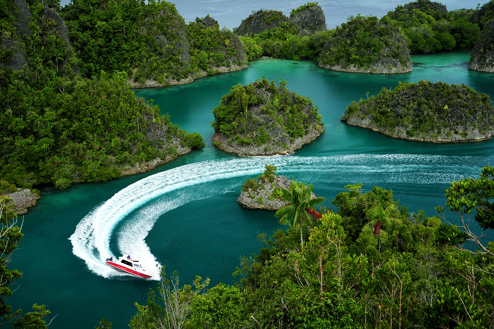
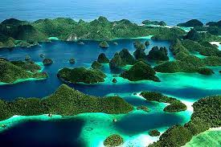
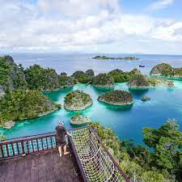
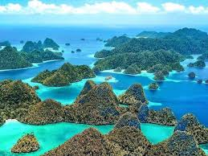
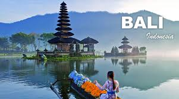
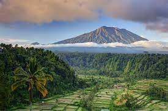
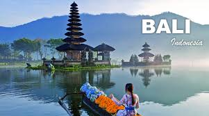
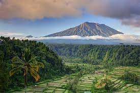

| Nama Objek Wisata | Lokasi | Deskripsi | Detail | ||
|---|---|---|---|---|---|
| Bali | Pulau Bali | Pulau Bali terkenal dengan pantai-pantai indahnya dan budaya yang kaya. | |||
|
Detail Bali: Bali, sebuah pulau indah di Indonesia, telah lama menjadi salah satu destinasi pariwisata paling terkenal di dunia. Dikenal dengan julukan "Pulau Dewata," Bali menyuguhkan pesona alam yang memukau dan kekayaan budaya yang tak tertandingi. Terletak di antara Pulau Jawa dan Pulau Lombok, Bali menawarkan pantai-pantai berpasir putih yang menakjubkan, seperti Kuta, Seminyak, dan Uluwatu, yang menjadi surga bagi para penggemar selancar.
Selain keindahan pantainya, Bali juga dikenal karena warisan budayanya yang kaya. Pulau ini dipenuhi dengan kuil-kuil Hindu yang indah, seperti Pura Besakih, yang dianggap sebagai tempat pemujaan tertinggi di Bali. Budaya Bali juga tercermin dalam tarian dan upacara tradisionalnya, seperti tari Legong dan tari Barong. Wisatawan dapat mengalami budaya ini melalui pertunjukan tari dan perayaan upacara adat yang sering diadakan di berbagai tempat di pulau ini. Selain itu, Bali juga menawarkan berbagai aktivitas wisata yang beragam, termasuk menyelam di terumbu karang yang spektakuler, hiking ke gunung-gunung yang indah, seperti Gunung Batur, dan mengeksplorasi pedesaan yang hijau dan indah. Terlepas dari semua daya tariknya, yang membuat Bali benar-benar istimewa adalah keramahannya yang luar biasa, dengan penduduk setempat yang ramah dan senyum yang tulus, menjadikan pulau ini tempat yang tak terlupakan bagi semua pengunjungnya. Bali benar-benar merupakan surga yang mendalam, menawarkan pengalaman yang tak terlupakan bagi siapa saja yang datang menjelajahinya. |
|||||
| Raja Ampat | Pulau Papua | Kepulauan Raja Ampat berada di bagian paling barat Papua yang begitu eksotis | |||
|
Detail Papua (Raja Ampat) : Raja Ampat adalah salah satu kabupaten di provinsi Papua Barat Daya, Indonesia. Ibukota kabupaten ini terletak di Waisai. Kabupaten ini memiliki 610 pulau, termasuk kepulauan Raja Ampat. Empat di antaranya, yakni Pulau Misool, Salawati, Batanta dan Waigeo, merupakan pulau-pulau besar. Dari seluruh pulau hanya 35 pulau yang berpenghuni sedangkan pulau lainnya tidak berpenghuni dan sebagian besar belum memiliki nama. Kabupaten ini memiliki total luas 67.379,60 km² dengan rincian luas daratan 7.559,60 km² dan luas lautan 59.820,00 km².     wilayah perairan Raja Ampat adalah salah satu destinasi diving terbaik di dunia. Menurut laporan sebuah organisasi sosial lingkungan internasional, The Nature Conservancy and Conservation International, sekitar 75% spesies karang di dunia hidup di kepulauan Raja Ampat. Destinasi ini memiliki kekayaan dan keunikan spesies yang tinggi dengan ditemukannya 1.318 jenis ikan, 699 jenis moluska (hewan lunak), dan 537 jenis terumbu karang. Rasakan sendiri sensasi menyelam dan bertemu dengan ragam jenis biota laut yang unik, seperti kuda laut kerdil (pygmy seahorse), ikan kelelawar, hingga dugong bisa kamu temukan di wilayah perairan Raja Ampat. Tak hanya keindahan bawah lautnya yang luar biasa, pemandangan di atas permukaan juga tak kalah memesona. Panorama deretan pulau-pulau batu di tengah gradasi air biru terlihat begitu surgawi saat dilihat dari atas bukit. |
|||||
Copy © 2023 M. Royhan Adriansyah. All rights reserved

 


